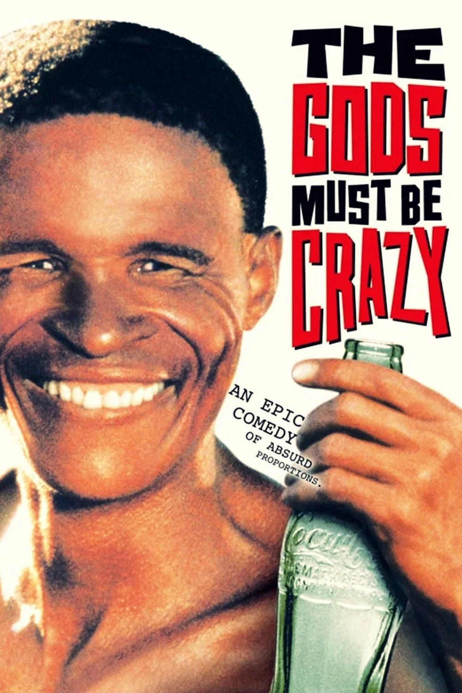

Image source: TMBD
Comedy Film
The Gods Must Be Crazy is a comedy film about Xi, a member of a Bushman tribe living in the Kalahari Desert. His peaceful life changes when a glass Coca-Cola bottle falls from the sky and becomes an unusual object to his community.
Xi discovers a Coca-Cola bottle that has fallen from an airplane. His tribe has never seen an object like it before, so they believe that it was sent by the gods. When the bottle begins causing disagreements among the people, Xi decides to take it away and throw it off the edge of the world.
N!xau plays Xi, the main character of the movie. Marius Weyers plays Andrew Steyn, while Sandra Prinsloo plays Kate Thompson. Their characters become involved in a series of funny and unexpected events.
I like The Gods Must Be Crazy because it is funny, entertaining, and different from many other comedy movies. I also enjoy how the movie shows Xi's simple way of understanding the modern world.